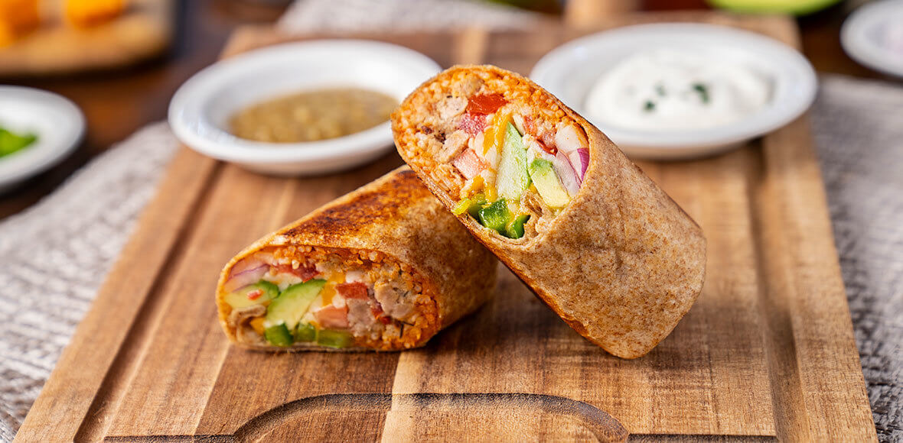

Burrito recipe !

The burrito, a beloved dish originating from Mexican cuisine, is a warm tortilla filled with various ingredients like beans, rice, meat, and vegetables.
Its origins trace back to northern Mexico, where simplicity and portability made it a staple for workers and travelers. The dish gained global fame in the mid-20th century, particularly through Mexican-American adaptations that introduced it to broader audiences.
Burritos are celebrated for their versatility, satisfying balance of flavors and textures, and ability to be customized to suit nearly any palate.
Ingredients :
- 1 large flour tortilla
- 1 cup cooked rice (white or Mexican-style)
- 1/2 cup cooked black or pinto beans
- 1/2 cup cooked and seasoned meat (chicken, beef, pork, or tofu for vegetarians)
- 1/4 cup shredded cheese (cheddar, Monterey Jack, or a Mexican blend)
- 1/4 cup salsa (mild, medium, or hot based on preference)
- 2 tbsp sour cream
- 1/4 cup guacamole
- Shredded lettuce and diced tomatoes for freshness
- Optional toppings: jalapeños, hot sauce, or chopped cilantro
Instructions :
- Warm the tortilla: Heat it in a dry skillet or microwave to make it pliable.
- Layer the ingredients: Spread the rice, beans, and meat in the center of the tortilla. Add cheese, salsa, sour cream, and guacamole. Top with lettuce and tomatoes.
- Fold the burrito: Fold the sides of the tortilla inward, then roll it tightly from bottom to top.
- Heat and serve: If desired, lightly toast the burrito in a skillet for a crisp exterior. Slice in half and enjoy!
This recipe offers a classic foundation, but feel free to experiment with fillings to suit your tastes.